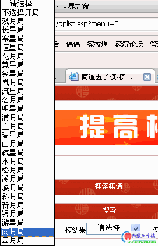
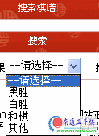
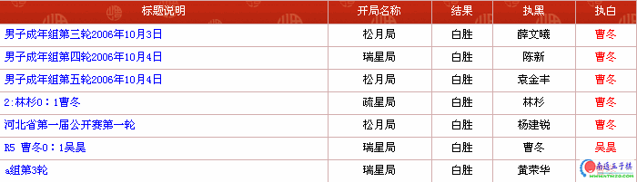
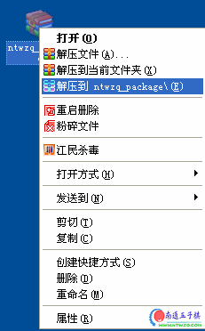
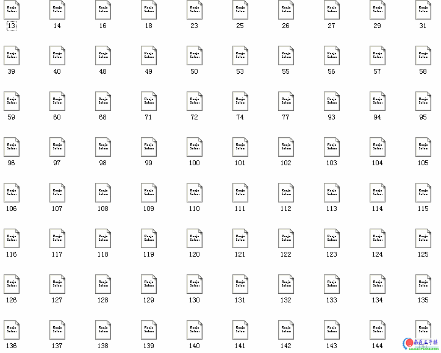

爱五子棋棋谱库提供打包下载功能
#1 爱五子棋棋谱库提供打包下载功能作者：有志青年 发表时间：2007-3-30 14:38:15
举例：
目标〔找到所有曹冬对战的白胜谱，不管开局〕
1、进入“五子棋谱库”，点击搜索。

2、选择开局中不选择，也就是所有开局

3、结果中，选择白胜，若不选择就是所有对局
4、对局者姓名中填写“曹冬”，点击搜索

5、列出所有曹冬的对局局面，列表下方有个打包下载，点击，将会有个压缩文件保存到本地

6、选择解压命令，会将所有棋谱解压下来

最后涉及到的是如何打开的问题。方法如下：
1、运行爱五子棋打谱软件【哪里下载？】然后点击文件菜单打开文件命令，选择棋谱可以逐个打开
2、或者点击文件菜单，选择合并文件夹里的文件，然后指定刚才的文件夹，则会将你刚才下载的棋谱合并成一个lib多分支谱。
增加搜索同型对局功能
大话不说了，操练一遍，你就知道是怎么回事了。
1、进入棋谱库，不会不知道吧？
2、选择搜索棋谱
3、按棋谱后面的文字框中输入“h8h9h6i10i6i9g9g8j11i7i11h10h11g11”然后点击搜索。
4、ok了，棋谱库中凡是有此相同落点的局面都出来了。
注：搜索字段不得少于6个落点。
后续操作：
5、对于这几个局面想仔细研究一下？那就点击列表下方的“打包下载”。
6、保存到你机器上的文件是sfg格式，用爱五子棋打谱软件打开吧。【哪里下载？】
7、可以选择爱五子棋打谱软件的“文件”合并文件夹中的文件。
8、后面不说了，自己试试。
简明教程：教你汇总打包下载棋情和牛奶的比赛棋谱 ShowPost.asp?ThreadID=3338
#2 Re:南通五子棋棋谱库提供打包下载功能作者：小丸.net 发表时间：2007-3-30 15:38:39
各位兄弟，请不要用花月妙手打开该棋谱，花月妙手对这个棋谱过敏，一读就死机#3 Re:南通五子棋棋谱库提供打包下载功能作者：有志青年 发表时间：2007-3-30 15:51:12

看来你的花月妙手要改进了，该棋谱是纯文本文件哟。是通行的单谱格式。
#4 Re:南通五子棋棋谱库提供打包下载功能作者：gerbo 发表时间：2007-3-31 4:48:01
 喜忧参半，喜的我这下找东西方便了，忧的是都的大热天了，怎么还感冒啊
喜忧参半，喜的我这下找东西方便了，忧的是都的大热天了，怎么还感冒啊
#5 Re:南通五子棋棋谱库提供打包下载功能作者：dream 发表时间：2007-4-9 9:38:55
能不能打包下载全部棋谱啊
#6 Re:Re:南通五子棋棋谱库提供打包下载功能作者：有志青年 发表时间：2007-4-9 9:42:40
引用：
原文由 dream 发表于 2007-4-9 9:38:55 :能不能打包下载全部棋谱啊
理论上可以，但是原则上不提供。
可以变通，通过2-3次组合方式下载。
#7 Re:南通五子棋棋谱库提供打包下载功能作者：dream 发表时间：2007-4-9 18:45:35
 哪种方式组合，好像都很复杂
哪种方式组合，好像都很复杂#8 Re:Re:南通五子棋棋谱库提供打包下载功能作者：有志青年 发表时间：2007-4-9 20:38:36
引用：
原文由 dream 发表于 2007-4-9 18:45:35 :
嘿嘿，不复杂，不复杂，全部打包下载和变通的方法对服务器的资源占用都很大，所以同样不能公布方法。见谅！
#9 Re:南通五子棋棋谱库提供打包下载功能作者：酒不醉人 发表时间：2007-6-8 11:54:04
在哪下载呢?#10 Re:南通五子棋棋谱库提供打包下载功能作者：佑弈 发表时间：2007-7-19 15:21:05
我怎么打不开呢?#11 Re:南通五子棋棋谱库提供打包下载功能作者：佑弈 发表时间：2007-7-19 15:29:45
我这里怎么不能下载呀?#12 Re:南通五子棋棋谱库提供打包下载功能作者：庭小 发表时间：2007-10-4 20:57:12
用用看#13 Re:南通五子棋棋谱库提供打包下载功能作者：147852 发表时间：2007-10-6 13:19:44
您好！这个怎么下载不了呢
#14 Re:爱五子棋棋谱库提供打包下载功能作者：金色麦田 发表时间：2008-3-17 20:04:46
楼主发的图片 一个都看不到？［ 有志青年 于 2008-3-17 20:53:42 时奖励此帖[金币加 20 威望加1］
#15 Re:Re:爱五子棋棋谱库提供打包下载功能作者：有志青年 发表时间：2008-3-17 20:53:11
引用：感谢您发现问题，因为本站从ntwzq的域名转移到iwzq的域名过程中出现了原有图片地址不正确的问题，现在已经修正。
原文由 金色麦田 发表于 2008-3-17 20:04:46 :
楼主发的图片 一个都看不到？
#16 Re:爱五子棋棋谱库提供打包下载功能作者：爱在春夏秋冬 发表时间：2008-4-23 20:41:34
看到这个热泪盈眶啊！
谢谢斑竹了！
顶啊！
#17 Re:爱五子棋棋谱库提供打包下载功能作者：闫荣辉 发表时间：2008-5-22 19:31:40
好好好！我好喜欢啊！
#18 Re:爱五子棋棋谱库提供打包下载功能作者：老高 发表时间：2008-7-30 16:16:59
怎么打包下载的文件是.asp格式呢？
#19 Re:Re:爱五子棋棋谱库提供打包下载功能作者：有志青年 发表时间：2008-7-30 16:33:00
引用：
原文由 老高 发表于 2008-7-30 16:16:59 :怎么打包下载的文件是.asp格式呢？
不要用下载软件下载，直接用ie下载即可。
#20 Re:爱五子棋棋谱库提供打包下载功能作者：老高 发表时间：2008-7-30 16:49:25
谢谢老大！#21 Re:爱五子棋棋谱库提供打包下载功能作者：喜旺 发表时间：2008-12-13 1:02:46
多谢老大，学习了#22 Re:爱五子棋棋谱库提供打包下载功能作者：星河一夜 发表时间：2009-1-4 7:56:32
好东西，在那下啊#23 Re:爱五子棋棋谱库提供打包下载功能作者：我是歪歪 发表时间：2009-1-31 13:11:12
我晕倒.要什么威望啊?#24 Re:爱五子棋棋谱库提供打包下载功能作者：阿歌 发表时间：2009-2-4 13:19:20
学习了，谢谢。
#25 Re:爱五子棋棋谱库提供打包下载功能作者：理想中 发表时间：2009-2-10 15:34:27
哎``` 威望值不够啊````
#26 Re:爱五子棋棋谱库提供打包下载功能作者：刀魂 发表时间：2009-3-7 22:48:45
呵呵 ，打包下载的棋谱没有说明什么的，比较复杂，适合学习变化。。。#27 Re:爱五子棋棋谱库提供打包下载功能作者：来客沙丝 发表时间：2009-3-9 19:12:08
威望不够。火候差远了。惭愧啊。#28 Re:爱五子棋棋谱库提供打包下载功能作者：刀魂 发表时间：2009-3-9 20:10:27
谢谢 有志大哥指导#29 Re:爱五子棋棋谱库提供打包下载功能作者：五子建立 发表时间：2009-5-21 9:15:45
如何提高威望值#30 Re:爱五子棋棋谱库提供打包下载功能作者：逆刃 发表时间：2009-5-21 9:31:37
回复楼上的朋友，第一个威望请到ShowPost.asp?ThreadID=3129这里回帖申请，以后的威望需要通过发表有质量的帖子或回复才能得到。#31 Re:爱五子棋棋谱库提供打包下载功能作者：苗儿青青 发表时间：2009-7-31 0:34:55
我才一个威望值，下不了，怎么办呢
#32 Re:爱五子棋棋谱库提供打包下载功能作者：起航 发表时间：2009-8-7 3:02:20
下载回去用了，呵呵。［ 有志青年 于 2009-8-7 6:11:04 时奖励此帖[金币加 20 威望加1］
#33 Re:爱五子棋棋谱库提供打包下载功能作者：弈聪 发表时间：2009-8-13 6:41:22
现在每天晚上都和我家小孩下五子棋.
从小开始训练哦.
可惜下载不了棋谱
［ 失落刀 于 2009-8-13 7:54:21 时奖励此帖[金币加 20 威望加1］0+1
#34 Re:爱五子棋棋谱库提供打包下载功能作者：龙腾 发表时间：2009-8-27 18:53:38
怎么下载啊 告诉我
#35 Re:爱五子棋棋谱库提供打包下载功能作者：琴心剑胆 发表时间：2009-10-28 8:51:43
这个功能太好了，我也试试。#36 Re:爱五子棋棋谱库提供打包下载功能作者：刘风 发表时间：2009-11-14 20:17:06
没威望不让下,汗个#37 Re:爱五子棋棋谱库提供打包下载功能作者：不再捣乱 发表时间：2009-11-17 16:06:10


#38 Re:爱五子棋棋谱库提供打包下载功能作者：总是输 发表时间：2009-11-25 20:47:35
好东西，支持
#39 Re:爱五子棋棋谱库提供打包下载功能作者：玩不过就跑 发表时间：2010-10-19 10:17:36
好东东#40 Re:爱五子棋棋谱库提供打包下载功能作者：卡西莫多 发表时间：2011-1-15 21:19:03
我都不是很懂你们说的这些，我刚学#41 Re:爱五子棋棋谱库提供打包下载功能作者：失落刀 发表时间：2011-1-19 17:50:22

#42 Re:爱五子棋棋谱库提供打包下载功能作者：思 发表时间：2011-3-19 19:52:01
好
#43 Re:爱五子棋棋谱库提供打包下载功能作者：某某某怕怕 发表时间：2011-3-27 8:19:29
总的来说我喜欢#44 Re:爱五子棋棋谱库提供打包下载功能作者：佛心诚 发表时间：2011-8-30 22:23:46
下载还出现金币不够提示#45 Re:爱五子棋棋谱库提供打包下载功能作者：尕孩 发表时间：2013-3-19 22:41:46
很强大吖。。#46 Re:爱五子棋棋谱库提供打包下载功能作者：路宁 发表时间：2013-6-9 15:38:42
威望不够不让下再啊。#47 Re:爱五子棋棋谱库提供打包下载功能作者：徐子乔 发表时间：2013-8-19 9:24:23
这么爽！我要把所有棋谱全部下载了！［ 屏蔽 于 2013-8-19 10:01:02 时奖励此帖[金币加 100 威望0+1］
［此帖子已被 屏蔽 在 2013-8-19 10:01:16 编辑过］
#48 Re:爱五子棋棋谱库提供打包下载功能作者：一定要吃好喝好 发表时间：2013-12-25 19:12:32
这个网站真是太全了，学习五子棋必来。#49 Re:爱五子棋棋谱库提供打包下载功能作者：庚午 发表时间：2014-3-30 9:34:51
学习了 我要学五子棋